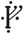

Chapter 10
STRIDER
Frodo, Pippin, and Sam made their way back to the parlour. There was no light. Merry was not there, and the fire had burned low. It was not until they had puffed up the embers into a blaze and thrown on a couple of faggots that they discovered Strider had come with them. There he was calmly sitting in a chair by the door!
‘Hallo!’ said Pippin. ‘Who are you, and what do you want?’
‘I am called Strider,’ he answered; ‘and though he may have forgotten it, your friend promised to have a quiet talk with me.’
‘You said I might hear something to my advantage, I believe,’ said Frodo. ‘What have you to say?’
‘Several things,’ answered Strider. ‘But, of course, I have my price.’
‘What do you mean?’ asked Frodo sharply.
‘Don’t be alarmed! I mean just this: I will tell you what I know, and give you some good advice – but I shall want a reward.’
‘And what will that be, pray?’ said Frodo. He suspected now that he had fallen in with a rascal, and he thought uncomfortably that he had brought only a little money with him. All of it would hardly satisfy a rogue, and he could not spare any of it.
‘No more than you can afford,’ answered Strider with a slow smile, as if he guessed Frodo’s thoughts. ‘Just this: you must take me along with you, until I wish to leave you.’
‘Oh, indeed!’ replied Frodo, surprised, but not much relieved. ‘Even if I wanted another companion, I should not agree to any such thing, until I knew a good deal more about you, and your business.’
‘Excellent!’ exclaimed Strider, crossing his legs and sitting back comfortably. ‘You seem to be coming to your senses again, and that is all to the good. You have been much too careless so far. Very well! I will tell you what I know, and leave the reward to you. You may be glad to grant it, when you have heard me.’
‘Go on then!’ said Frodo. ‘What do you know?’
‘Too much; too many dark things,’ said Strider grimly. ‘But as for your business—’ He got up and went to the door, opened it quickly and looked out. Then he shut it quietly and sat down again. ‘I have quick ears,’ he went on, lowering his voice, ‘and though I cannot disappear, I have hunted many wild and wary things and I can usually avoid being seen, if I wish. Now, I was behind the hedge this evening on the Road west of Bree, when four hobbits came out of the Downlands. I need not repeat all that they said to old Bombadil or to one another; but one thing interested me. Please remember, said one of them, that the name Baggins must not be mentioned. I am Mr. Underhill, if any name must be given. That interested me so much that I followed them here. I slipped over the gate just behind them. Maybe Mr. Baggins has an honest reason for leaving his name behind; but if so, I should advise him and his friends to be more careful.’
‘I don’t see what interest my name has for anyone in Bree,’ said Frodo angrily, ‘and I have still to learn why it interests you. Mr. Strider may have an honest reason for spying and eavesdropping; but if so, I should advise him to explain it.’
‘Well answered!’ said Strider laughing. ‘But the explanation is simple: I was looking for a Hobbit called Frodo Baggins. I wanted to find him quickly. I had learned that he was carrying out of the Shire, well, a secret that concerned me and my friends.
‘Now, don’t mistake me!’ he cried, as Frodo rose from his seat, and Sam jumped up with a scowl. ‘I shall take more care of the secret than you do. And care is needed!’ He leaned forward and looked at them. ‘Watch every shadow!’ he said in a low voice. ‘Black horsemen have passed through Bree. On Monday one came down the Greenway, they say; and another appeared later, coming up the Greenway from the south.’
There was a silence. At last Frodo spoke to Pippin and Sam: ‘I ought to have guessed it from the way the gatekeeper greeted us,’ he said. ‘And the landlord seems to have heard something. Why did he press us to join the company? And why on earth did we behave so foolishly: we ought to have stayed quiet in here.’
‘It would have been better,’ said Strider. ‘I would have stopped your going into the common-room, if I could; but the innkeeper would not let me in to see you, or take a message.’
‘Do you think he—’ began Frodo.
‘No, I don’t think any harm of old Butterbur. Only he does not altogether like mysterious vagabonds of my sort.’ Frodo gave him a puzzled look. ‘Well, I have rather a rascally look, have I not?’ said Strider with a curl of his lip and a queer gleam in his eye. ‘But I hope we shall get to know one another better. When we do, I hope you will explain what happened at the end of your song. For that little prank—’
‘It was sheer accident!’ interrupted Frodo.
‘I wonder,’ said Strider. ‘Accident, then. That accident has made your position dangerous.’
‘Hardly more than it was already,’ said Frodo. ‘I knew these horsemen were pursuing me; but now at any rate they seem to have missed me and to have gone away.’
‘You must not count on that!’ said Strider sharply. ‘They will return. And more are coming. There are others. I know their number. I know these Riders.’ He paused, and his eyes were cold and hard. ‘And there are some folk in Bree who are not to be trusted,’ he went on. ‘Bill Ferny, for instance. He has an evil name in the Bree-land, and queer folk call at his house. You must have noticed him among the company: a swarthy sneering fellow. He was very close with one of the Southern strangers, and they slipped out together just after your “accident”. Not all of those Southerners mean well; and as for Ferny, he would sell anything to anybody; or make mischief for amusement.’
‘What will Ferny sell, and what has my accident got to do with him?’ said Frodo, still determined not to understand Strider’s hints.
‘News of you, of course,’ answered Strider. ‘An account of your performance would be very interesting to certain people. After that they would hardly need to be told your real name. It seems to me only too likely that they will hear of it before this night is over. Is that enough? You can do as you like about my reward: take me as a guide or not. But I may say that I know all the lands between the Shire and the Misty Mountains, for I have wandered over them for many years. I am older than I look. I might prove useful. You will have to leave the open road after tonight; for the horsemen will watch it night and day. You may escape from Bree, and be allowed to go forward while the Sun is up; but you won’t go far. They will come on you in the wild, in some dark place where there is no help. Do you wish them to find you? They are terrible!’
The hobbits looked at him, and saw with surprise that his face was drawn as if with pain, and his hands clenched the arms of his chair. The room was very quiet and still, and the light seemed to have grown dim. For a while he sat with unseeing eyes as if walking in distant memory or listening to sounds in the Night far away.
‘There!’ he cried after a moment, drawing his hand across his brow. ‘Perhaps I know more about these pursuers than you do. You fear them, but you do not fear them enough, yet. Tomorrow you will have to escape, if you can. Strider can take you by paths that are seldom trodden. Will you have him?’
There was a heavy silence. Frodo made no answer; his mind was confused with doubt and fear. Sam frowned, and looked at his master; and at last he broke out:
‘With your leave, Mr. Frodo, I’d say no! This Strider here, he warns and he says take care; and I say yes to that, and let’s begin with him. He comes out of the Wild, and I never heard no good of such folk. He knows something, that’s plain, and more than I like; but it’s no reason why we should let him go leading us out into some dark place far from help, as he puts it.’
Pippin fidgeted and looked uncomfortable. Strider did not reply to Sam, but turned his keen eyes on Frodo. Frodo caught his glance and looked away. ‘No,’ he said slowly. ‘I don’t agree. I think, I think you are not really as you choose to look. You began to talk to me like the Bree-folk, but your voice has changed. Still Sam seems right in this: I don’t see why you should warn us to take care, and yet ask us to take you on trust. Why the disguise? Who are you? What do you really know about – about my business; and how do you know it?’
‘The lesson in caution has been well learned,’ said Strider with a grim smile. ‘But caution is one thing and wavering is another. You will never get to Rivendell now on your own, and to trust me is your only chance. You must make up your mind. I will answer some of your questions, if that will help you to do so. But why should you believe my story, if you do not trust me already? Still here it is—’
At that moment there came a knock at the door. Mr. Butterbur had arrived with candles, and behind him was Nob with cans of hot water. Strider withdrew into a dark corner.
‘I’ve come to bid you good night,’ said the landlord, putting the candles on the table. ‘Nob! Take the water to the rooms!’ He came in and shut the door.
‘It’s like this,’ he began, hesitating and looking troubled. ‘If I’ve done any harm, I’m sorry indeed. But one thing drives out another, as you’ll admit; and I’m a busy man. But first one thing and then another this week have jogged my memory, as the saying goes; and not too late I hope. You see, I was asked to look out for hobbits of the Shire, and for one by the name of Baggins in particular.’
‘And what has that got to do with me?’ asked Frodo.
‘Ah! you know best,’ said the landlord, knowingly. ‘I won’t give you away; but I was told that this Baggins would be going by the name of Underhill, and I was given a description that fits you well enough, if I may say so.’
‘Indeed! Let’s have it then!’ said Frodo, unwisely interrupting.
‘A stout little fellow with red cheeks,’ said Mr. Butterbur solemnly. Pippin chuckled, but Sam looked indignant. ‘That won’t help you much; it goes for most hobbits, Barley, he says to me,’ continued Mr. Butterbur with a glance at Pippin. ‘But this one is taller than some and fairer than most, and he has a cleft in his chin: perky chap with a bright eye. Begging your pardon, but he said it, not me.’
‘He said it? And who was he?’ asked Frodo eagerly.
‘Ah! That was Gandalf, if you know who I mean. A wizard they say he is, but he’s a good friend of mine, whether or no. But now I don’t know what he’ll have to say to me, if I see him again: turn all my ale sour or me into a block of wood, I shouldn’t wonder. He’s a bit hasty. Still what’s done can’t be undone.’
‘Well, what have you done?’ said Frodo, getting impatient with the slow unravelling of Butterbur’s thoughts.
‘Where was I?’ said the landlord, pausing and snapping his fingers. ‘Ah, yes! Old Gandalf. Three months back he walked right into my room without a knock. Barley, he says, I’m off in the morning. Will you do something for me? You’ve only to name it, I said. I’m in a hurry, said he, and I’ve no time myself, but I want a message took to the Shire. Have you anyone you can send, and trust to go? I can find someone, I said, tomorrow, maybe, or the day after. Make it tomorrow, he says, and then he gave me a letter.
‘It’s addressed plain enough,’ said Mr. Butterbur, producing a letter from his pocket, and reading out the address slowly and proudly (he valued his reputation as a lettered man):
Mr. FRODO BAGGINS, BAG END, HOBBITON in the SHIRE.
‘A letter for me from Gandalf!’ cried Frodo.
‘Ah!’ said Mr. Butterbur. ‘Then your right name is Baggins?’
‘It is,’ said Frodo, ‘and you had better give me that letter at once, and explain why you never sent it. That’s what you came to tell me, I suppose, though you’ve taken a long time to come to the point.’
Poor Mr. Butterbur looked troubled. ‘You’re right, master,’ he said, ‘and I beg your pardon. And I’m mortal afraid of what Gandalf will say, if harm comes of it. But I didn’t keep it back a-purpose. I put it by safe. Then I couldn’t find nobody willing to go to the Shire next day, nor the day after, and none of my own folk were to spare; and then one thing after another drove it out of my mind. I’m a busy man. I’ll do what I can to set matters right, and if there’s any help I can give, you’ve only to name it.
‘Leaving the letter aside, I promised Gandalf no less. Barley, he says to me, this friend of mine from the Shire, he may be coming out this way before long, him and another. He’ll be calling himself Underhill. Mind that! But you need ask no questions. And if I’m not with him, he may be in trouble, and he may need help. Do whatever you can for him, and I’ll be grateful, he says. And here you are, and trouble is not far off, seemingly.’
‘What do you mean?’ asked Frodo.
‘These black men,’ said the landlord lowering his voice. ‘They’re looking for Baggins, and if they mean well, then I’m a hobbit. It was on Monday, and all the dogs were yammering and the geese screaming. Uncanny, I called it. Nob, he came and told me that two black men were at the door asking for a hobbit called Baggins. Nob’s hair was all stood on end. I bid the black fellows be off, and slammed the door on them; but they’ve been asking the same question all the way to Archet, I hear. And that Ranger, Strider, he’s been asking questions, too. Tried to get in here to see you, before you’d had bite or sup, he did.’
‘He did!’ said Strider suddenly, coming forward into the light. ‘And much trouble would have been saved, if you had let him in, Barliman.’
The landlord jumped with surprise. ‘You!’ he cried. ‘You’re always popping up. What do you want now?’
‘He’s here with my leave,’ said Frodo. ‘He came to offer me his help.’
‘Well, you know your own business, maybe,’ said Mr. Butterbur, looking suspiciously at Strider. ‘But if I was in your plight, I wouldn’t take up with a Ranger.’
‘Then who would you take up with?’ asked Strider. ‘A fat innkeeper who only remembers his own name because people shout it at him all day? They cannot stay in The Pony for ever, and they cannot go home. They have a long road before them. Will you go with them and keep the black men off?’
‘Me? Leave Bree! I wouldn’t do that for any money,’ said Mr. Butterbur, looking really scared. ‘But why can’t you stay here quiet for a bit, Mr. Underhill? What are all these queer goings on? What are these black men after, and where do they come from, I’d like to know?’
‘I’m sorry I can’t explain it all,’ answered Frodo. ‘I am tired and very worried, and it’s a long tale. But if you mean to help me, I ought to warn you that you will be in danger as long as I am in your house. These Black Riders: I am not sure, but I think, I fear they come from—’
‘They come from Mordor,’ said Strider in a low voice. ‘From Mordor, Barliman, if that means anything to you.’
‘Save us!’ cried Mr. Butterbur turning pale; the name evidently was known to him. ‘That is the worst news that has come to Bree in my time.’
‘It is,’ said Frodo. ‘Are you still willing to help me?’
‘I am,’ said Mr. Butterbur. ‘More than ever. Though I don’t know what the likes of me can do against, against—’ he faltered.
‘Against the Shadow in the East,’ said Strider quietly. ‘Not much, Barliman, but every little helps. You can let Mr. Underhill stay here tonight, as Mr. Underhill; and you can forget the name of Baggins, till he is far away.’
‘I’ll do that,’ said Butterbur. ‘But they’ll find out he’s here without help from me, I’m afraid. It’s a pity Mr. Baggins drew attention to himself this evening, to say no more. The story of that Mr. Bilbo’s going off has been heard before tonight in Bree. Even our Nob has been doing some guessing in his slow pate; and there are others in Bree quicker in the uptake than he is.’
‘Well, we can only hope the Riders won’t come back yet,’ said Frodo.
‘I hope not, indeed,’ said Butterbur. ‘But spooks or no spooks, they won’t get in The Pony so easy. Don’t you worry till the morning. Nob’ll say no word. No black man shall pass my doors, while I can stand on my legs. Me and my folk’ll keep watch tonight; but you had best get some sleep, if you can.’
‘In any case we must be called at dawn,’ said Frodo. ‘We must get off as early as possible. Breakfast at six-thirty, please.’
‘Right! I’ll see to the orders,’ said the landlord. ‘Good night, Mr. Baggins – Underhill, I should say! Good night – now, bless me! Where’s your Mr. Brandybuck?’
‘I don’t know,’ said Frodo with sudden anxiety. They had forgotten all about Merry, and it was getting late. ‘I am afraid he is out. He said something about going for a breath of air.’
‘Well, you do want looking after and no mistake: your party might be on a holiday!’ said Butterbur. ‘I must go and bar the doors quick, but I’ll see your friend is let in when he comes. I’d better send Nob to look for him. Good night to you all!’ At last Mr. Butterbur went out, with another doubtful look at Strider and a shake of his head. His footsteps retreated down the passage.
‘Well?’ said Strider. ‘When are you going to open that letter?’ Frodo looked carefully at the seal before he broke it. It seemed certainly to be Gandalf’s. Inside, written in the wizard’s strong but graceful script, was the following message:
THE PRANCING PONY, BREE. Midyear’s Day, Shire Year, 1418.
Dear Frodo,
Bad news has reached me here. I must go off at once. You had better leave Bag End soon, and get out of the Shire before the end of July at latest. I will return as soon as I can; and I will follow you, if I find that you are gone. Leave a message for me here, if you pass through Bree. You can trust the landlord (Butterbur). You may meet a friend of mine on the Road: a Man, lean, dark, tall, by some called Strider. He knows our business and will help you. Make for Rivendell. There I hope we may meet again. If I do not come, Elrond will advise you.
Yours in haste
GANDALF.
PS. Do NOT use It again, not for any reason whatever! Do not travel by night! 
PPS. Make sure that it is the real Strider. There are many strange men on the roads. His true name is Aragorn.
All that is gold does not glitter,
Not all those who wander are lost;
The old that is strong does not wither,
Deep roots are not reached by the frost.
From the ashes a fire shall be woken,
A light from the shadows shall spring;
Renewed shall be blade that was broken,
The crownless again shall be king.
| PPPS. | I hope Butterbur sends this promptly. A worthy man, but his memory is like a lumber-room: thing wanted always buried. If he forgets, I shall roast him. |
Fare Well! 
Frodo read the letter to himself, and then passed it to Pippin and Sam. ‘Really old Butterbur has made a mess of things!’ he said. ‘He deserves roasting. If I had got this at once, we might all have been safe in Rivendell by now. But what can have happened to Gandalf ? He writes as if he was going into great danger.’
‘He has been doing that for many years,’ said Strider.
Frodo turned and looked at him thoughtfully, wondering about Gandalf’s second postscript. ‘Why didn’t you tell me that you were Gandalf’s friend at once?’ he asked. ‘It would have saved time.’
‘Would it? Would any of you have believed me till now?’ said Strider. ‘I knew nothing of this letter. For all I knew I had to persuade you to trust me without proofs, if I was to help you. In any case, I did not intend to tell you all about myself at once. I had to study you first, and make sure of you. The Enemy has set traps for me before now. As soon as I had made up my mind, I was ready to tell you whatever you asked. But I must admit,’ he added with a queer laugh, ‘that I hoped you would take to me for my own sake. A hunted man sometimes wearies of distrust and longs for friendship. But there, I believe my looks are against me.’
‘They are – at first sight at any rate,’ laughed Pippin with sudden relief after reading Gandalf’s letter. ‘But handsome is as handsome does, as we say in the Shire; and I daresay we shall all look much the same after lying for days in hedges and ditches.’
‘It would take more than a few days, or weeks, or years, of wandering in the Wild to make you look like Strider,’ he answered. ‘And you would die first, unless you are made of sterner stuff than you look to be.’
Pippin subsided; but Sam was not daunted, and he still eyed Strider dubiously. ‘How do we know you are the Strider that Gandalf speaks about?’ he demanded. ‘You never mentioned Gandalf, till this letter came out. You might be a play-acting spy, for all I can see, trying to get us to go with you. You might have done in the real Strider and took his clothes. What have you to say to that?’
‘That you are a stout fellow,’ answered Strider; ‘but I am afraid my only answer to you, Sam Gamgee, is this. If I had killed the real Strider, I could kill you. And I should have killed you already without so much talk. If I was after the Ring, I could have it – NOW!’
He stood up, and seemed suddenly to grow taller. In his eyes gleamed a light, keen and commanding. Throwing back his cloak, he laid his hand on the hilt of a sword that had hung concealed by his side. They did not dare to move. Sam sat wide-mouthed staring at him dumbly.
‘But I am the real Strider, fortunately,’ he said, looking down at them with his face softened by a sudden smile. ‘I am Aragorn son of Arathorn; and if by life or death I can save you, I will.’
There was a long silence. At last Frodo spoke with hesitation. ‘I believed that you were a friend before the letter came,’ he said, ‘or at least I wished to. You have frightened me several times tonight, but never in the way that servants of the Enemy would, or so I imagine. I think one of his spies would – well, seem fairer and feel fouler, if you understand.’
‘I see,’ laughed Strider. ‘I look foul and feel fair. Is that it? All that is gold does not glitter, not all those who wander are lost.’
‘Did the verses apply to you then?’ asked Frodo. ‘I could not make out what they were about. But how did you know that they were in Gandalf’s letter, if you have never seen it?’
‘I did not know,’ he answered. ‘But I am Aragorn, and those verses go with that name.’ He drew out his sword, and they saw that the blade was indeed broken a foot below the hilt. ‘Not much use is it, Sam?’ said Strider. ‘But the time is near when it shall be forged anew.’
Sam said nothing.
‘Well,’ said Strider, ‘with Sam’s permission we will call that settled. Strider shall be your guide. And now I think it is time you went to bed and took what rest you can. We shall have a rough road tomorrow. Even if we are allowed to leave Bree unhindered, we can hardly hope now to leave it unnoticed. But I shall try to get lost as soon as possible. I know one or two ways out of Bree-land other than the main road. If once we shake off the pursuit, I shall make for Weathertop.’
‘Weathertop?’ said Sam. ‘What’s that?’
‘It is a hill, just to the north of the Road, about half way from here to Rivendell. It commands a wide view all round; and there we shall have a chance to look about us. Gandalf will make for that point, if he follows us. After Weathertop our journey will become more difficult, and we shall have to choose between various dangers.’
‘When did you last see Gandalf?’ asked Frodo. ‘Do you know where he is, or what he is doing?’
Strider looked grave. ‘I do not know,’ he said. ‘I came west with him in the spring. I have often kept watch on the borders of the Shire in the last few years, when he was busy elsewhere. He seldom left it unguarded. We last met on the first of May: at Sarn Ford down the Brandywine. He told me that his business with you had gone well, and that you would be starting for Rivendell in the last week of September. As I knew he was at your side, I went away on a journey of my own. And that has proved ill; for plainly some news reached him, and I was not at hand to help.
‘I am troubled, for the first time since I have known him. We should have had messages, even if he could not come himself. When I returned, many days ago, I heard the ill news. The tidings had gone far and wide that Gandalf was missing and the horsemen had been seen. It was the Elven-folk of Gildor that told me this; and later they told me that you had left your home; but there was no news of your leaving Buckland. I have been watching the East Road anxiously.’
‘Do you think the Black Riders have anything to do with it – with Gandalf’s absence, I mean?’ asked Frodo.
‘I do not know of anything else that could have hindered him, except the Enemy himself,’ said Strider. ‘But do not give up hope! Gandalf is greater than you Shire-folk know – as a rule you can only see his jokes and toys. But this business of ours will be his greatest task.’
Pippin yawned. ‘I am sorry,’ he said, ‘but I am dead tired. In spite of all the danger and worry I must go to bed, or sleep where I sit. Where is that silly fellow, Merry? It would be the last straw, if we had to go out in the dark to look for him.’
At that moment they heard a door slam; then feet came running along the passage. Merry came in with a rush followed by Nob. He shut the door hastily, and leaned against it. He was out of breath. They stared at him in alarm for a moment before he gasped: ‘I have seen them, Frodo! I have seen them! Black Riders!’
‘Black Riders!’ cried Frodo. ‘Where?’
‘Here. In the village. I stayed indoors for an hour. Then as you did not come back, I went out for a stroll. I had come back again and was standing just outside the light of the lamp looking at the stars. Suddenly I shivered and felt that something horrible was creeping near: there was a sort of deeper shade among the shadows across the road, just beyond the edge of the lamplight. It slid away at once into the dark without a sound. There was no horse.’
‘Which way did it go?’ asked Strider, suddenly and sharply.
Merry started, noticing the stranger for the first time. ‘Go on!’ said Frodo. ‘This is a friend of Gandalf’s. I will explain later.’
‘It seemed to make off up the Road, eastward,’ continued Merry. ‘I tried to follow. Of course, it vanished almost at once; but I went round the corner and on as far as the last house on the Road.’
Strider looked at Merry with wonder. ‘You have a stout heart,’ he said; ‘but it was foolish.’
‘I don’t know,’ said Merry. ‘Neither brave nor silly, I think. I could hardly help myself. I seemed to be drawn somehow. Anyway, I went, and suddenly I heard voices by the hedge. One was muttering; and the other was whispering, or hissing. I couldn’t hear a word that was said. I did not creep any closer, because I began to tremble all over. Then I felt terrified, and I turned back, and was just going to bolt home, when something came behind me and I…I fell over.’
‘I found him, sir,’ put in Nob. ‘Mr. Butterbur sent me out with a lantern. I went down to West-gate, and then back up towards South-gate. Just nigh Bill Ferny’s house I thought I could see something in the Road. I couldn’t swear to it, but it looked to me as if two men was stooping over something, lifting it. I gave a shout, but when I got up to the spot there was no signs of them, and only Mr. Brandybuck lying by the roadside. He seemed to be asleep. “I thought I had fallen into deep water,” he says to me, when I shook him. Very queer he was, and as soon as I had roused him, he got up and ran back here like a hare.’
‘I am afraid that’s true,’ said Merry, ‘though I don’t know what I said. I had an ugly dream, which I can’t remember. I went to pieces. I don’t know what came over me.’
‘I do,’ said Strider. ‘The Black Breath. The Riders must have left their horses outside, and passed back through the South-gate in secret. They will know all the news now, for they have visited Bill Ferny; and probably that Southerner was a spy as well. Something may happen in the night, before we leave Bree.’
‘What will happen?’ said Merry. ‘Will they attack the inn?’
‘No, I think not,’ said Strider. ‘They are not all here yet. And in any case that is not their way. In dark and loneliness they are strongest; they will not openly attack a house where there are lights and many people – not until they are desperate, not while all the long leagues of Eriador still lie before us. But their power is in terror, and already some in Bree are in their clutch. They will drive these wretches to some evil work: Ferny, and some of the strangers, and, maybe, the gatekeeper too. They had words with Harry at West-gate on Monday. I was watching them. He was white and shaking when they left him.’
‘We seem to have enemies all round,’ said Frodo. ‘What are we to do?’
‘Stay here, and do not go to your rooms! They are sure to have found out which those are. The hobbit-rooms have windows looking north and close to the ground. We will all remain together and bar this window and the door. But first Nob and I will fetch your luggage.’
While Strider was gone, Frodo gave Merry a rapid account of all that had happened since supper. Merry was still reading and pondering Gandalf’s letter when Strider and Nob returned.
‘Well Masters,’ said Nob, ‘I’ve ruffled up the clothes and put in a bolster down the middle of each bed. And I made a nice imitation of your head with a brown woollen mat, Mr. Bag – Underhill, sir,’ he added with a grin.
Pippin laughed. ‘Very life-like!’ he said. ‘But what will happen when they have penetrated the disguise?’
‘We shall see,’ said Strider. ‘Let us hope to hold the fort till morning.’
‘Good night to you,’ said Nob, and went off to take his part in the watch on the doors.
Their bags and gear they piled on the parlour-floor. They pushed a low chair against the door and shut the window. Peering out, Frodo saw that the night was still clear. The Sickle* was swinging bright above the shoulders of Bree-hill. He then closed and barred the heavy inside shutters and drew the curtains together. Strider built up the fire and blew out all the candles.
The hobbits lay down on their blankets with their feet towards the hearth; but Strider settled himself in the chair against the door. They talked for a little, for Merry still had several questions to ask.
‘Jumped over the Moon!’ chuckled Merry as he rolled himself in his blanket. ‘Very ridiculous of you, Frodo! But I wish I had been there to see. The worthies of Bree will be discussing it a hundred years hence.’
‘I hope so,’ said Strider. Then they all fell silent, and one by one the hobbits dropped off to sleep.